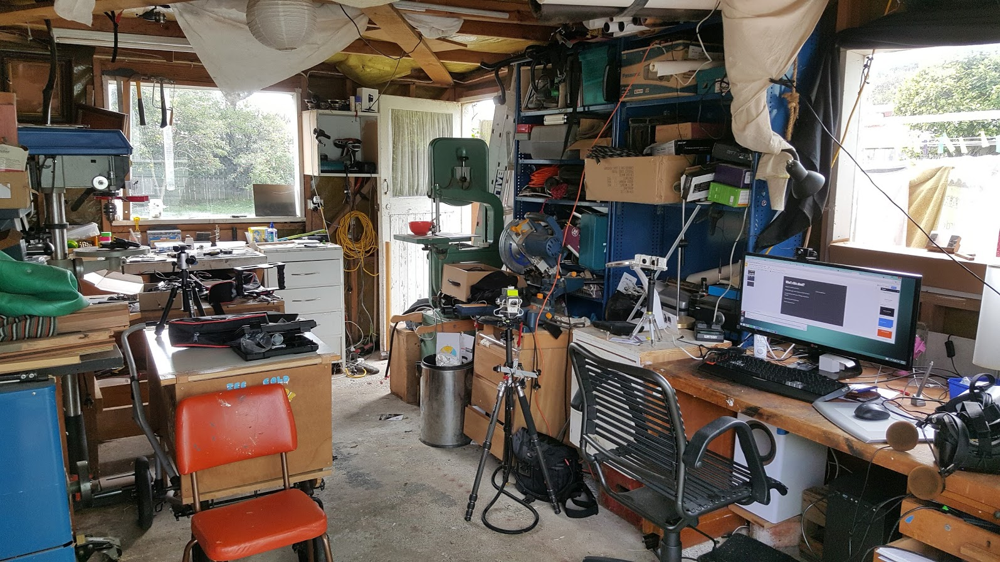

Gear VR and Note 5

This is a look back to fill in some details leading up to now. It’s summertime, leaning into Christmas. This is how the shed is looking. Replacing my Iphone 4 was something on my mind for a while. Over all I have been pretty happy with this new pocket computer. I really love the camera and have taken more regular photos since having it. I’ve been really amazed at the integration of all manor of computer vision things into it. Maybe all the phones are like this now.
I can’t recall what pushed me into getting this new phone. I think I got the impulse to get one of those Gear VR headsets and a new phone to go with it as my ability to read small text faded and my interest in VR video grew. The phone was expensive. I also got convinced to give up on Vodaphone and go with Spark while I was there in the store. I guess I had been thinking Vodafone should be better than it was. I’m writing this half a year later and do not think switching was in my best interest. It’s not really that bad (I don’t have a contract and can switch at any time, but I just don’t want the hassle) but it is defiantly more expensive overall. I like that they have these wifi phone booths around the country but every month I feel like I’m paying more than is justified by my usage and way more than the previous year with Vodafone. One contributing problem I’ve had was where I am using data when I think I am using wifi. The icon for that shit is tiny and it’s unclear why it didnt connect to the wifi where I was at (work/home). Also the phone broke in the first or second week. The pen busted right in half. It was fixed under warranty but was still a drag to send it away so soon after buying it.
The Samsung phone is an interesting contrast to the iphone, in terms of culture and ecology. Less of an engineered experience.
I went with the note 5. Physically it’s way bigger than my last phone and bigger even than my partner’s iphone 6. I like the size. I appreciate the ‘back’ button now and can’t remember how to iphone without it.
The Gear VR is pretty good for reviewing and sharing material that I have made. The VR Oculus portal was an unexpected positive. There are many indications that the software environment is still in rapid development. It’s not particularly comfortable to wear. It’s white inside which has glare if there is any light behind me, which is clearly an oversight.